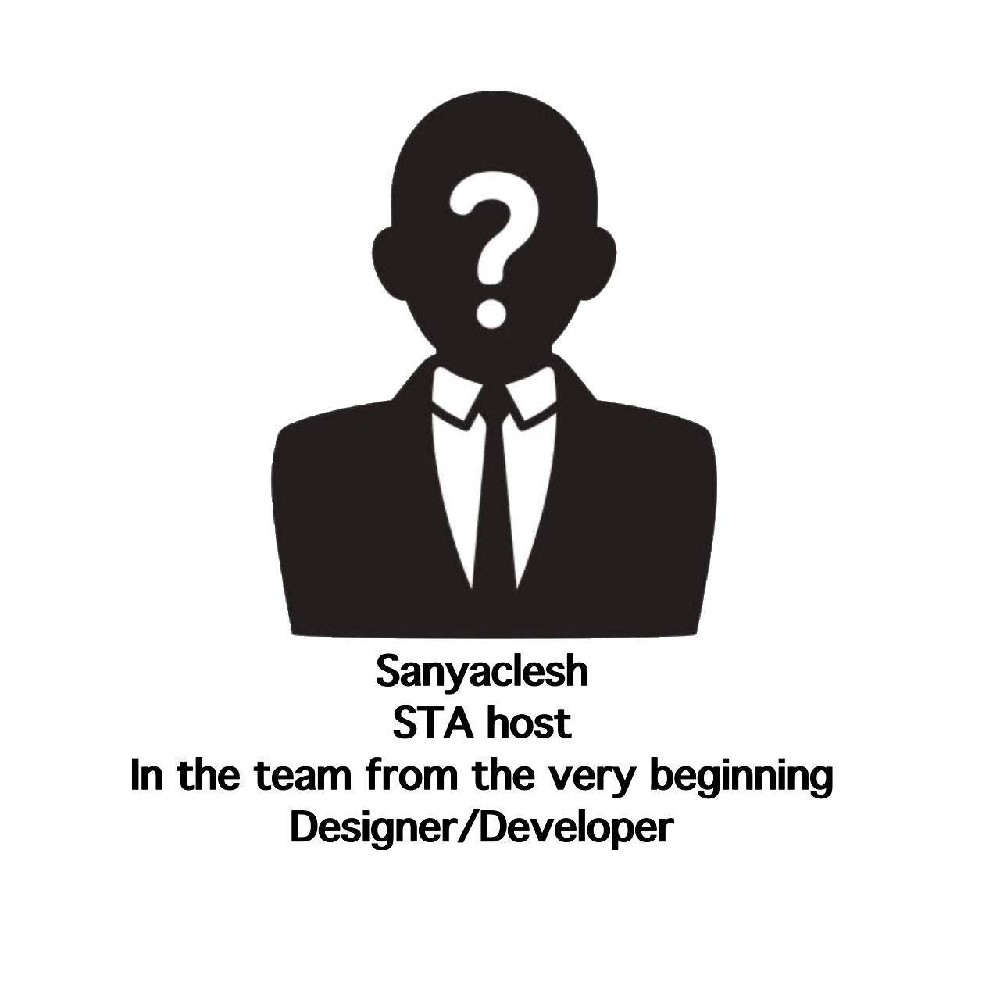
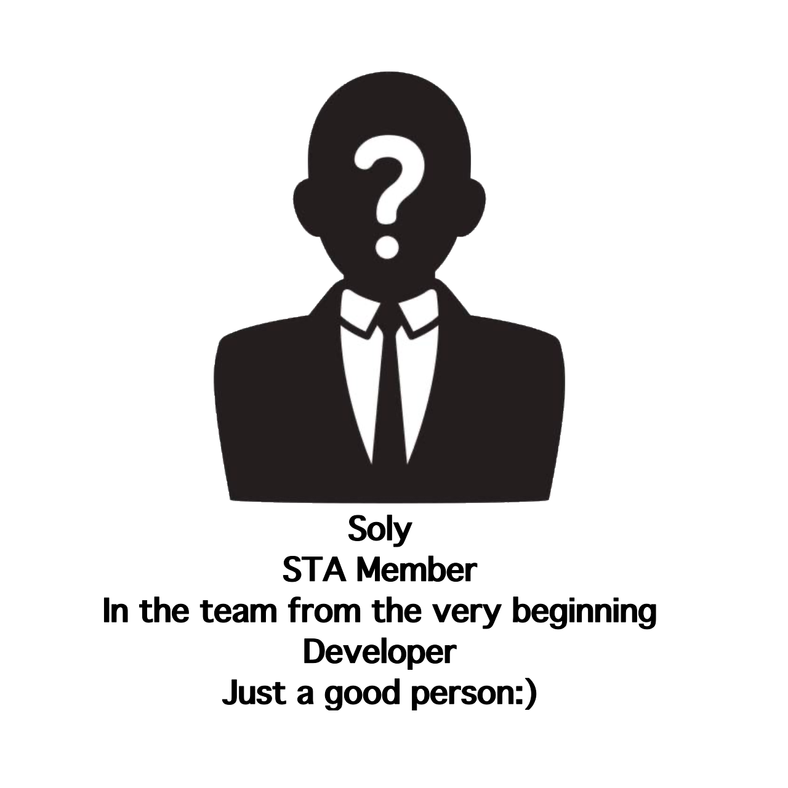

STA studio X TLOL
Склад STA
Наразі в STA 2 людей.
Це розробник Soly, який працює над The Limit Of Iies,
та Sanyaclesh, який працює над The Street Racer
Детальніше про них ви можете дізнатися з фото-картки нижче ↓


На чому працюють розробники?
Soly
Lenovo LOQ
I5 12450H
RTX 4060 laptop
16GB ram
Win 11 Home
I5 12450H
RTX 4060 laptop
16GB ram
Win 11 Home
Sanyaclesh
Asus VivoBook
Pentium N5000
MX110 2Gb
4GB ram
Win 10 Pro
Pentium N5000
MX110 2Gb
4GB ram
Win 10 Pro